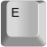
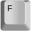
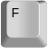
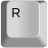
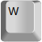
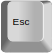
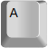
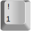

Annotation Window
This is the main window where annotations are drawn.
This is the window where the below mentioned keybaord shortcuts work.
Annotations can be selected by clicking on them in the main window. This envokes same behavior as selecting the annotation from the table.
Annotation drawing utilized Matlab's roipoly.m. See Matlab help on roipoly for more information.
Annotaion Context Menu
Right-clicking on an annototation actives it's context menu
Table
Add a new polygon and table entry
Edit the polygon of currently seletected row
Delete the entry of currently seletected row
Save the current set of annotations
Load a set of annotation from a previously save MAT-file
Shade all the current polygons
Help is here
Keyboard Shortcuts
| Keys | Action |
|---|---|
|  | PAN UP |

|
PAN DOWN |


|
PAN LEFT |
 

|
PAN RIGHT |
|  | ZOOM IN |
|  | ZOOM OUT |
 +
+
|
ZOOM RESET |
|  | Reset drawing state, if ADD button stops working... |
|
+

|
ADD |
|
+
|
DELETE |
| Contrast Adjustment (Only available for single channel data) | |

|
Reset color axis |
|  | Decrease lower limit of color axis |
| Increase lower limit of color axis | |

|
Decrease upper limit of color axis |

|
Increase upper limit of color axis |